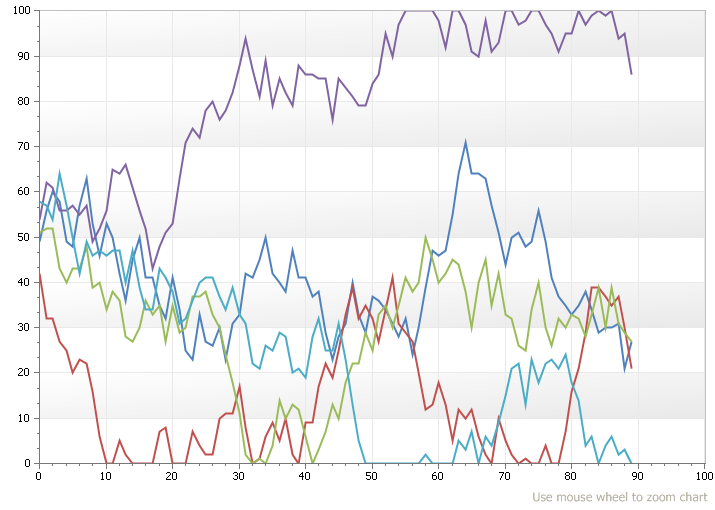

Help >
Codejock ActiveX Controls v15.3 > Xtreme Chart Pro > Objects > ChartFastLineSeriesStyle Object >
Overview
| Xtreme Chart Pro ActiveX Control v15.3 |
Fast Line style (use when plotting thousands of points and drawing speed is important).
For a list of all members defined in this module, see ChartFastLineSeriesStyle members.

|
Fast line is a variation of the normal line style that considerably improves performance by reducing the time it takes to draw the line. The increased speed comes at the cost of not displaying the plot points in the line and you can't display labels (among other things done behind the scenes). With fast line you can also turn off antialiasing.
Common uses for a fast line might be a systems performance monitor that shows a chart in real time. Or possibly a chart that displays thousands of data points in a single view (might show a trend over 10,000 years in a single view).
In the diagram below there are 5 "fast lines" that have 1000 points drawn every 10 milliseconds. You can view the sample is full motion by running the included samples.

'Complete VB6 sample showing the above picture. (The sample is included with the installation as well in the "Chart Browser" sample.)
Private Sub UserControl_Initialize()
cmblInterval.AddItem "100"
cmblInterval.AddItem "300"
cmblInterval.AddItem "500"
cmblInterval.AddItem "1000"
cmblInterval.ListIndex = 0
cmbSeriesCount.AddItem "1"
cmbSeriesCount.AddItem "2"
cmbSeriesCount.AddItem "3"
cmbSeriesCount.AddItem "4"
cmbSeriesCount.AddItem "5"
cmbSeriesCount.ListIndex = 0
ChartControl.Content.Legend.Visible = False
Dim Title As ChartTitle
Set Title = ChartControl.Content.Titles.Add("Use mouse wheel to zoom chart")
Title.Docking = xtpChartDockBottom
Title.Alignment = xtpChartAlignFar
Title.Font.StdFont.Size = 9
Title.TextColor = vbGrayText
CreateChart
End Sub
Private Sub CreateChart()
ChartControl.Content.Series.DeleteAll
Dim Series As ChartSeries
Dim SeriesCount As Long
SeriesCount = cmbSeriesCount.List(cmbSeriesCount.ListIndex)
Dim i As Long
For i = 1 To SeriesCount
Set Series = ChartControl.Content.Series.Add("Series")
Dim Style As New ChartFastLineSeriesStyle
Set Series.Style = Style
Series.ArgumentScaleType = xtpChartScaleNumerical
Next i
Dim Diagram As ChartDiagram2D
Set Diagram = ChartControl.Content.Diagrams(0)
Diagram.AllowZoom = True
Diagram.AxisY.Range.MaxValue = 100.1
Diagram.AxisY.Range.AutoRange = False
Diagram.AxisY.AllowZoom = False
Diagram.AxisX.Range.MaxValue = 100.1
Diagram.AxisX.Range.AutoRange = False
Diagram.AxisX.Range.ZoomLimit = 10
Diagram.AxisX.Interlaced = False
Diagram.AxisY.Interlaced = chkInterlaced
chkAntialiased_Click
End Sub
Private Sub cmdAddPoints_Click()
Dim i As Long
For i = 1 To 1000
AddPoint
Next i
End Sub
Private Sub cmblInterval_Click()
Timer.Interval = cmblInterval.List(cmblInterval.ListIndex)
End Sub
Private Sub cmbSeriesCount_Click()
CreateChart
End Sub
Private Sub chkAntialiased_Click()
Dim Series As ChartSeries
For Each Series In ChartControl.Content.Series
Series.Style.Antialiasing = chkAntialiased
Next
End Sub
Private Sub chkInterlaced_Click()
Dim Diagram As ChartDiagram2D
Set Diagram = ChartControl.Content.Diagrams(0)
Diagram.AxisY.Interlaced = chkInterlaced
End Sub
Private Sub AddPoint()
Dim Series As ChartSeries
Dim Value As Long, Count As Long
For Each Series In ChartControl.Content.Series
Value = 50
Count = Series.Points.Count
If (Count > 0) Then Value = Series.Points(Count - 1).Value(0)
Value = Value + (Rnd() * 20) - 10
If (Value < 0) Then Value = 0
If (Value > 100) Then Value = 100
Series.Points.Add Count, Value
Next
Dim Diagram As ChartDiagram2D
Set Diagram = ChartControl.Content.Diagrams(0)
If (Count > 100) Then
Dim AutoScroll As Boolean
AutoScroll = IIf(Diagram.AxisX.Range.ViewMaxValue = Diagram.AxisX.Range.MaxValue, True, False)
Diagram.AxisX.Range.MaxValue = Count
If (AutoScroll) Then
Dim delta As Double
delta = Diagram.AxisX.Range.ViewMaxValue - Diagram.AxisX.Range.ViewMinValue
Diagram.AxisX.Range.ViewAutoRange = False
Diagram.AxisX.Range.ViewMaxValue = Count
Diagram.AxisX.Range.ViewMinValue = Count - delta
End If
End If
End Sub
Private Sub Timer_Timer()
AddPoint
End Sub
Private Sub UserControl_Resize()
On Error Resume Next
lblTitle.Width = ScaleWidth - 2 * gbOptions.Left
gbOptions.Width = ScaleWidth - 2 * gbOptions.Left
ChartControl.Move ChartControl.Left, ChartControl.Top, ScaleWidth - 2 * ChartControl.Left, ScaleHeight - ChartControl.Top - 8
End Sub